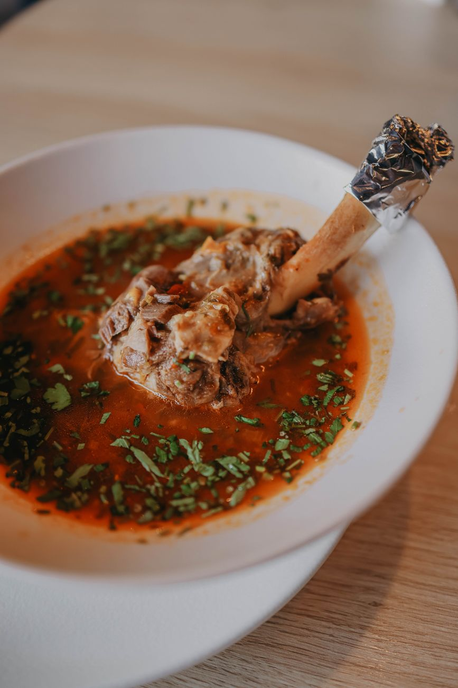
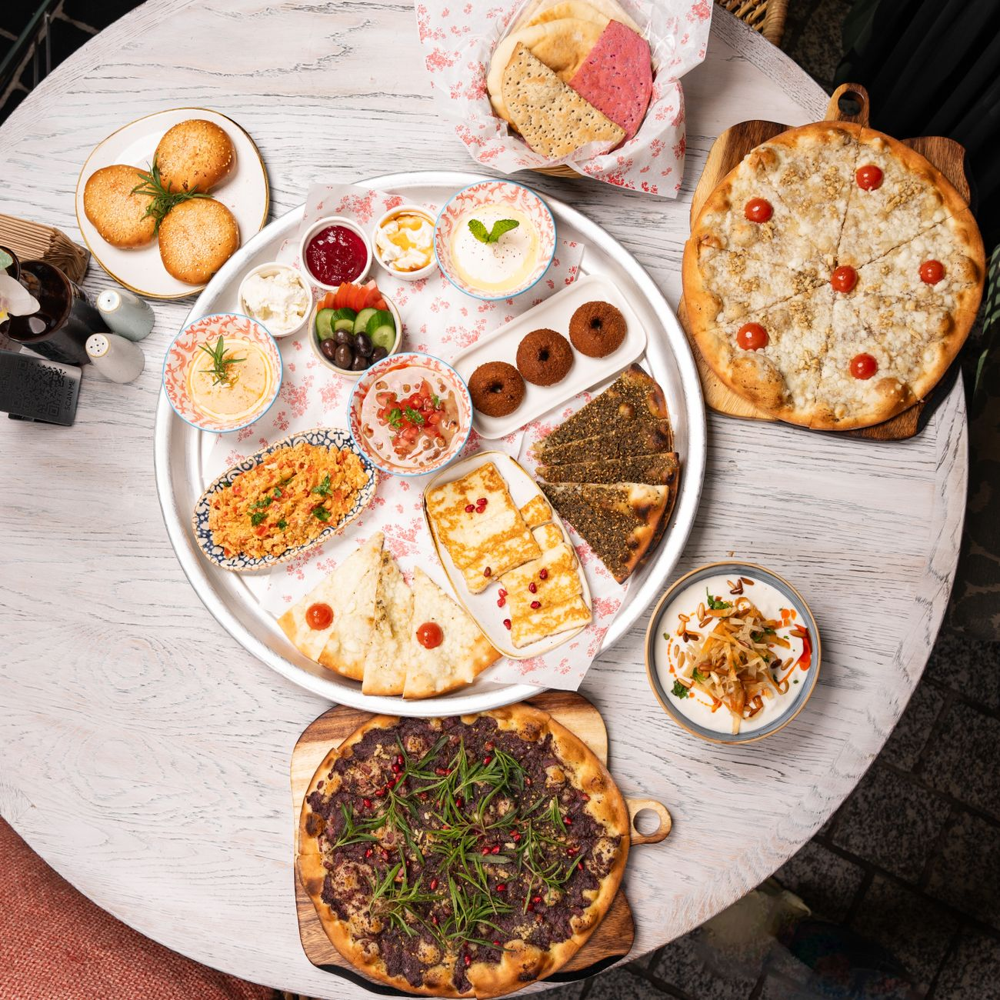
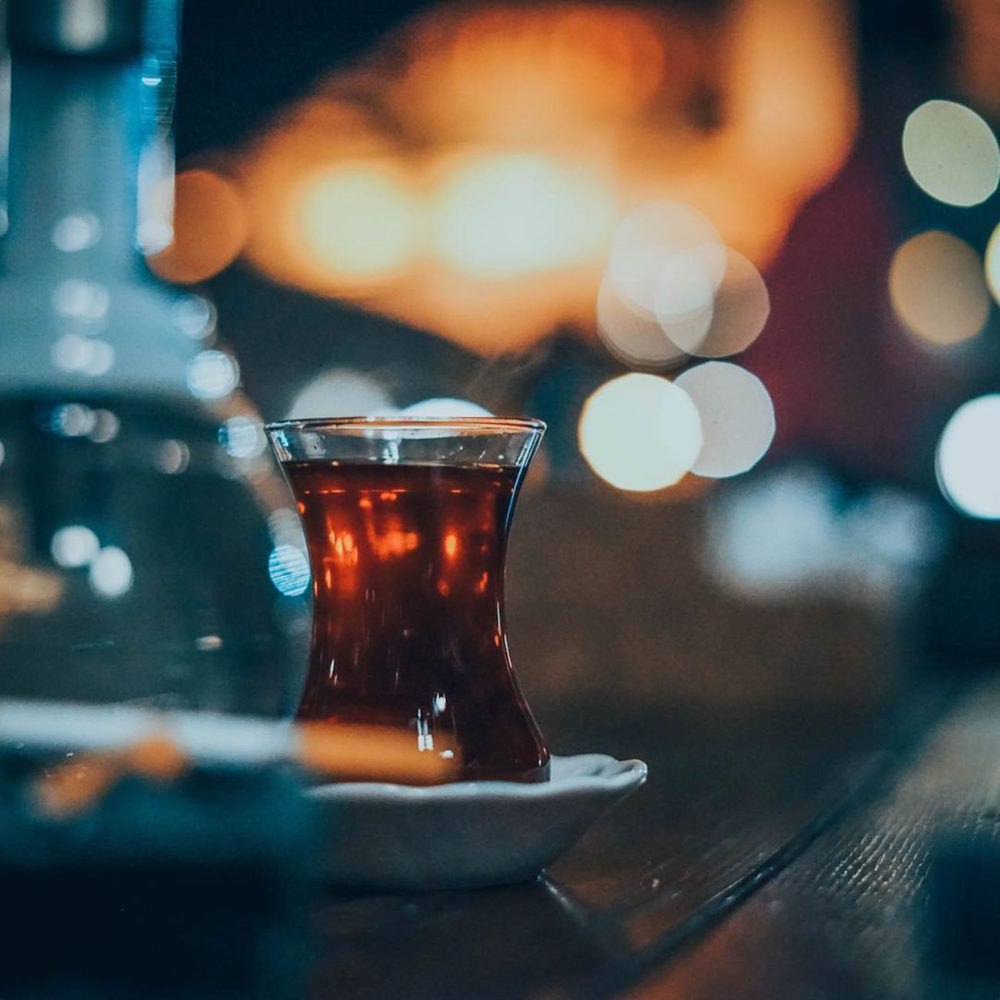

The Menu
Dinner every night from 5pm, brunch Saturday and Sunday until 2pm. Everything on this page is available for takeout — phone (604) 555-0147 and we will have it boxed and bagged in about twenty-five minutes.
Where the food comes from
Three things decide how a Persian meal tastes, and we buy all three carefully.
The rice is aged sella basmati from Punjab, bought in 20-kilo sacks and rested at least a year before it reaches us. Aged grain drinks less water and comes out long and separate, which is the whole point of chelow. We parboil it, drain it, and steam it over a low flame for forty minutes with a lid wrapped in a cloth. The crust at the bottom of the pot — tahdig — is made with yogurt and saffron, and there is only so much of it in each pot, so it goes out until it runs out.
Herbs are the other half. Ghormeh sabzi takes parsley, cilantro, chives, and fenugreek, and we wash and chop them here rather than buying them frozen. Through the summer most of it comes from farms in the Fraser Valley; in winter we buy from the Persian grocers up on Lonsdale who bring in what we cannot get locally. The fenugreek is always dried, because fresh fenugreek turns the stew bitter.
Lamb is halal, from a supplier in Surrey we have used since 2009 — shoulder for the stews, leg for the kebab. Beef and chicken are halal as well. We grind the koobideh meat in-house each morning, twice through the plate, with grated onion and nothing else but salt and pepper. It has to be ground the same day or it will not hold on the skewer.
Appetizers and mezze
Portions are meant for sharing. Three or four between two people makes a full meal if you would rather skip the kebab.
-
Kashk-e bademjan — 13
Eggplant cooked down slowly with garlic and turmeric, finished with whey, fried mint, and crisp onion. Served warm with barbari bread.
-
Mast-o khiar — 9
Strained yogurt with cucumber, dried mint, dill, and a few crushed walnuts and rose petals over the top. Cold, and good with everything else on the table.
-
Mirza ghasemi — 13
Smoked eggplant from the Caspian coast, mashed with tomato, a lot of garlic, and egg stirred through at the end.
-
Sabzi khordan — 11
A plate of fresh tarragon, basil, mint, and radish with feta and walnuts. This is how a Persian dinner begins, and it keeps coming back through the meal.
-
Ash-e reshteh — 12
Thick soup of noodles, chickpeas, lentils, and herbs, topped with whey, fried mint, and onion. A bowl is nearly a meal.
-
Salad Shirazi — 9
Cucumber, tomato, and red onion diced small, dressed with lime juice, olive oil, and dried mint. We dress it to order so it stays crisp.
-
Dolmeh barg-e mo — 12
Grape leaves rolled around rice, split peas, and herbs, with a little tamarind and sugar in the braise. Six to an order, served cool.
-
Barbari bread and butter — 5
Baked down the street each afternoon, brought over warm, sprinkled with sesame and nigella seed.
Charcoal kebabs and rice plates
Everything here is grilled over lump charcoal on flat steel skewers. Each plate comes with saffron chelow rice, a charred tomato, grilled onion, and a wedge of lime. Substitute baghali polo — rice with dill and fava beans — for 4, or ask for a side of tahdig for 7 while it lasts.
-
Koobideh — 24
Two skewers of ground beef and lamb with grated onion, pressed onto the skewer by hand. The house standard, and the thing we make most of.
-
Barg — 31
Beef tenderloin butterflied thin, marinated overnight in onion juice and saffron. Ordered medium unless you tell us otherwise.
-
Joojeh with bone — 26
Chicken thigh and leg on the bone in saffron, lemon, and onion. Slower over the coals, juicier for it.
-
Joojeh boneless — 25
The same marinade on thigh meat off the bone. This is the one most children order.
-
Shishlik — 34
Four lamb rib chops, trimmed close, seasoned simply with salt, pepper, and lemon. Our most expensive plate and worth the difference.
-
Soltani — 36
One skewer of koobideh and one of barg on the same plate, for when you cannot decide.
-
Kebab-e torsh — 28
Beef marinated in pomegranate molasses and ground walnut, from Gilan. Tart, dark, and unlike the rest of the grill.
-
Vegetable skewer plate — 21
Mushroom, zucchini, pepper, and onion over the coals with saffron butter, served on chelow. Ask and we will grill it with olive oil instead.
Khoresht — the slow-cooked stews

These are the dishes that take the longest and that we are proudest of. Each pot goes on in the morning and comes off in the late afternoon. All stews are served with saffron chelow rice. Lamb can be swapped for chicken on request, or left out entirely.
-
Ghormeh sabzi — 26
Lamb shoulder with parsley, cilantro, chives, and dried fenugreek, red kidney beans, and whole dried limes. Cooked four hours until the herbs turn almost black. The dish people order when they are homesick.
-
Gheymeh — 25
Lamb and yellow split peas in a tomato and dried lime broth, with a handful of crisp fried potato over the top.
-
Fesenjan — 28
Ground walnuts and pomegranate molasses cooked down for hours with chicken thigh until the sauce is thick and dark. Sweet and sour together; ask for it tarter and we will adjust the pot for you.
-
Bademjan — 25
Lamb with fried eggplant, tomato, and sour grape juice. The eggplant is salted and fried to order so it does not go soft in the pot.
-
Karafs — 25
Celery and mint with lamb, sharpened with lemon. Lighter than the others, and a good first stew if you have not had khoresht before.
-
Adas polo — 22
Lentil rice with dates, raisins, and cinnamon, cooked without meat. Vegan as it stands.
Weekend brunch — Saturday and Sunday until 2pm

Brunch is the meal we grew up eating: bread, cheese, herbs, honey, eggs, and a lot of tea. The kitchen opens at 9am both days. We do not take brunch reservations for parties under six, so come early if it is raining — the room fills by 11.
-
Sofreh-ye sobhaneh — 24 for two
The full table: feta, walnuts, fresh herbs, cucumber, tomato, butter, sour cherry preserve, honeycomb, and as much warm barbari as you can eat. Tea included.
-
Nan-o panir-o sabzi — 14
The smaller version for one. Bread, feta, walnuts, and a plate of herbs.
-
Omelet — 15
Tomatoes cooked down with turmeric and eggs broken in at the end, served in the pan with bread. Lighter than it sounds.
-
Nargesi — 16
Spinach wilted in butter with garlic and eggs folded through, finished with a spoon of yogurt.
-
Haleem — 16
Wheat and shredded turkey cooked overnight into a smooth porridge, served with cinnamon, sugar, and melted butter to add yourself. Sundays only, until it is gone.
-
Adasi — 12
Lentils stewed soft with onion and turmeric, with lemon and bread. Vegan.
-
Halim bademjan — 15
Eggplant and lamb cooked to a paste with whey and mint, eaten with bread. A heavier plate for a cold morning.
-
Saffron French toast — 15
Barbari soaked in saffron custard, griddled in butter, served with date syrup and clotted cream. The one concession to the neighbourhood.
Desserts, tea, and drinks

The samovar runs all day. Tea is 4 a glass and we will keep refilling it for as long as you are sitting down — that is not a promotion, it is just how tea works.
-
Bastani — 10
Saffron and rosewater ice cream with pistachio and frozen threads of clotted cream, churned here each week.
-
Faloodeh — 10
Thin frozen rice noodles in rosewater syrup with lime squeezed over at the table. Cold and very refreshing.
-
Sholeh zard — 8
Saffron rice pudding set in a shallow dish, scattered with cinnamon, almond, and pistachio. Vegan.
-
Baghlava — 8
Cut in diamonds, made with rosewater and cardamom rather than honey, so it is less sweet than the Levantine kind.
-
Black tea — 4
Loose Ceylon and Earl Grey brewed over the samovar, poured strong and cut with hot water to taste. Served with saffron rock sugar.
-
Doogh — 5
Salted yogurt drink with dried mint, lightly carbonated. Drink it with koobideh at least once.
-
Sharbat — 6
Cold fruit syrup and water. Sour cherry, quince and lime, or rosewater with basil seed.
-
Coffee and soft drinks — 3 to 5
Drip coffee, espresso, sparkling water, and canned soda. No liquor licence, and no corkage — you are welcome to bring nothing at all.
Dietary notes
Tell your server what you need and they will tell you plainly what we can do. We would rather say no to one dish than guess.
- Halal
- All meat in the kitchen is halal — beef, lamb, chicken, and turkey. We do not cook pork and we serve no alcohol, so there is nothing to keep separate.
- Vegetarian
- The mezze list is almost entirely vegetarian, along with adas polo, the vegetable skewer plate, kashk-e bademjan, omelet, nargesi, and most desserts. Ash-e reshteh is made with vegetable stock.
- Vegan
- Adas polo, adasi, sholeh zard, salad Shirazi, dolmeh, sabzi khordan without the feta, and the vegetable skewers grilled in olive oil instead of saffron butter. Barbari bread contains no dairy or egg.
- Gluten-free
- Rice, kebabs, and every khoresht are made without flour. Avoid barbari, ash-e reshteh, haleem, baghlava, and the French toast. We do not have a separate fryer, so fried potato and eggplant share oil with nothing containing wheat — but ask if you are celiac and we will walk you through it.
- Nuts
- Walnuts and pistachios are used heavily — in fesenjan, mast-o khiar, sabzi khordan, kebab-e torsh, and most desserts. Tell us before you order and we will keep them off the plate where the recipe allows.
- Children
- A half plate of koobideh or boneless joojeh with rice is 13. We will bring bread and yogurt right away for anyone small and impatient.
Phoning in an order
Takeout runs the same hours as the dining room. Call (604) 555-0147 and we will tell you honestly how long the wait is. Stews travel well; tahdig does not, so eat that one here.